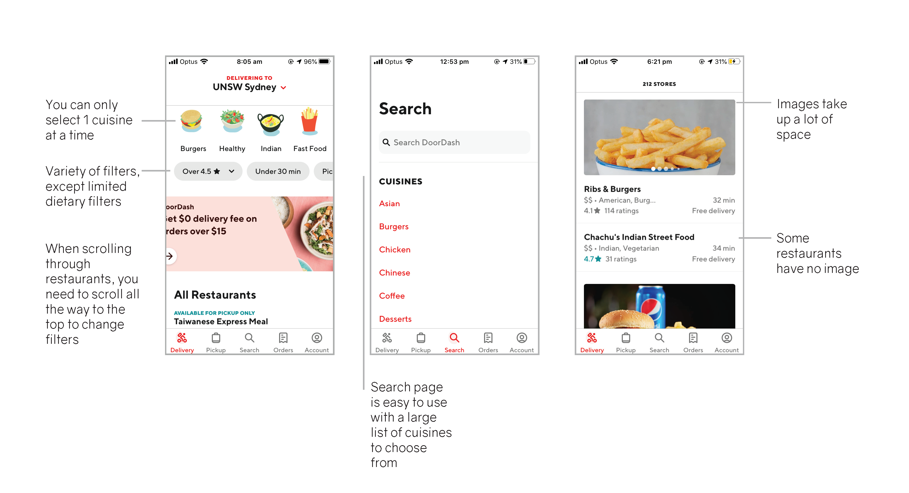

USER JOURNEY
TASK 1: Finding a Restaurant
Doordash:
There are many filters, but to change them you have to scroll back up the page. The only dietary filter was vegetarian which is limiting. The images of the restaurants are inconsistent, with some restaurants not having an image at all. This means that users overlook some restaurants. The user can only select 1 food cuisine at a time. In one situation, the user wanted to eat either Thai or Chinese but since the app only allowed one cuisine choice, the user had to look through each one separately. The search page provides a list of cuisines as a prompt and the search bar is quick and responsive.

Deliveroo:
The filters and search bar are displayed on the home page, and the bar remains at the top of the page as you scroll making it easier to change filters. There are a larger selection of dietary filters. However, it doesn’t allow you to filter based on price. The search bar is not responsive as you type and is slow to load. The restaurant images are more consistent and high quality. The estimated delivery times are clearly highlighted on the restaurant summary, however there is no indication of pricing.
TASK 2: Selecting Menu Items
Doordash:
There is no way to filter the menu based on allergies or dietary needs, even if the vegetarian filter is selected on the home screen. Users need to read through the whole description of each menu item but not all ingredients are included and some menus have no descriptions at all. Not all items include photos, which means that the user scrolls right past them. Users were less likely to select an item without a photo because its not clear what you will be ordering. The menu is laid out in different sections, so the user has to constantly go back and forth between pages.
Deliveroo:
The app provides a search bar at the top of the menu which allows people to search for what they want. However, it only searches the titles of items and not the descriptions. Similarly to Doordash, you are unable to filter based on dietary requirements and images are inconsistent. The layout of this menu is slightly better because the user can scroll through the sections of the menu or select a section from the top bar without having to go back and forth.

PERSONAS
Taylor is a 22 year old law student. He is busy and doesn’t have time to cook. He is vegetarian with allergies, so it's hard for him to find food he can eat. Taylor finds the apps easy to use. Neither app caters for his dietary needs and he often has to call the restaurant. Deliveroo makes this search slightly easier with more filters, but he still needs to read through each item on the menu. He liked how Doordash filters and displays prices. However, he prefers how Deliveroo displays the total cost of the order.
Joanna is a 65 year old retired teacher. She lives in Mosman with her husband, Steve. She enjoys ordering new foods and eating it in the comfort of her home. However, she is not comfortable with technology and gets frustrated when she can’t work out what to do. Joanna found both apps difficult to use as she hasn’t used apps like this before. She likes the way both apps clearly display and filter based on the restaurant’s ratings. She also likes the suggested restaurant section, because it saves her a lot of time and effort.
NIELSEN'S HEURISTICS
Visibility of System Status:
After adding items to the order, both apps have coloured buttons at the bottom of the screen to view the order. Doordash displays the quantity of items and the restaurant, but doesn’t display the price which is less appealing for someone on a tight budget. Deliveroo displays the total cost and quantity of the order but doesn't say which restaurant. These buttons allow the user to view the status of their order as they search for more items to add.
Error Prevention:
Some items on the menu give the user options to choose from. Doordash uses radio buttons which imply that only 1 choice can be made. The buttons on Deliveroo are not as obvious and it is less clear how many options can be chosen. Neither app will allow the user to proceed without making a selection.

Mental Model:
Both apps have a very similar base layout and use similar interactive aspects. Both use a map interface on the home page allowing the user to explore the restaurant options and a path interface guiding the user towards a purchase. Metaphors such as “cart”, “basket” and “checkout” reference a physical Point of Sale and allows the user to understand the digital process.